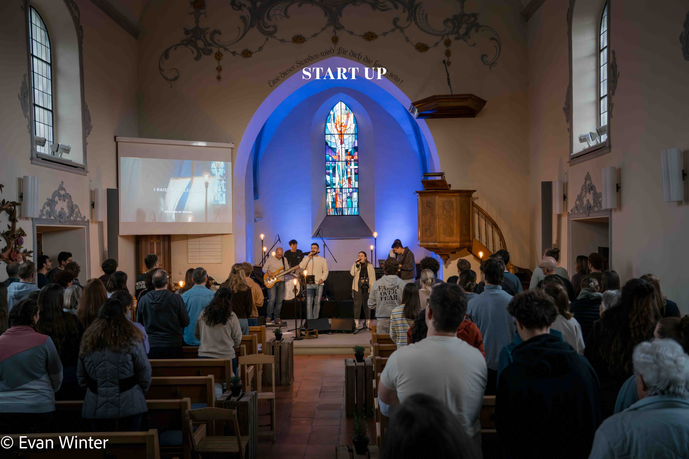
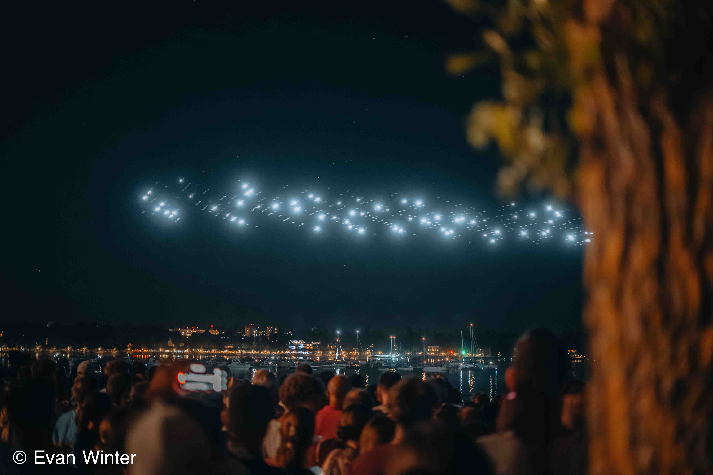
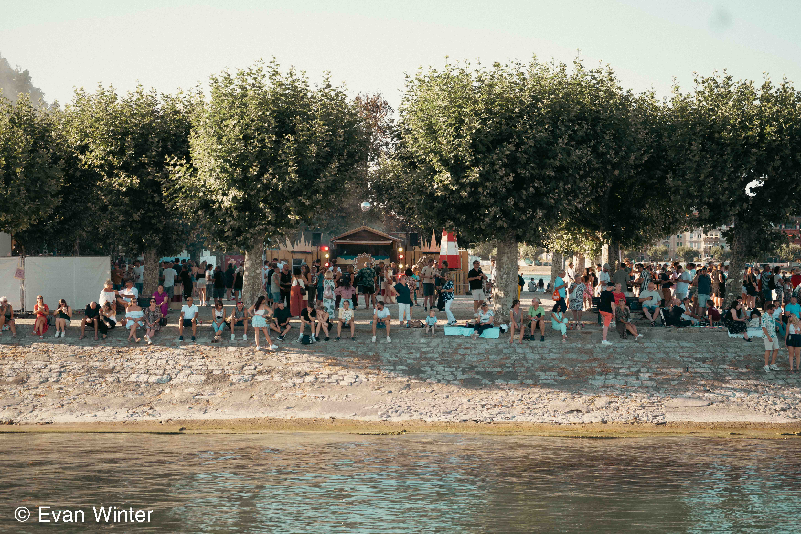

Meine
Galerien
Eine Auswahl aus den wichtigsten Serien und den neu hinzugekommenen Arbeiten.

Galerie
Fantastical Kreuzlingen
Umfangreiche Dokumentation mit starken Kontrasten zwischen Show, Publikum und Nahaufnahmen.
TypFoto & VideoSchwerpunktKreuzlingenBilder17
Galerie öffnen

Galerie
Godi Amriswil
Leise, konzentrierte Eventfotografie mit editoriellem Blick auf Menschen und Raum.
TypFoto / VideoSchwerpunktAmriswilBilder12
Galerie öffnen

Galerie
Godi Kreuzlingen
Eine kompakte visuelle Dokumentation mit klaren Situationen und natürlichem Licht.
TypFoto / VideoSchwerpunktKreuzlingenBilder47
Galerie öffnen

Galerie
Felix Jaehn
Live-Momente aus Konstanz mit Fokus auf Licht, Bewegung und Nähe zur Bühne.
TypLive-SetSchwerpunktKonstanzBilder10
Galerie öffnen

Galerie
Start-up Gottesdienst
Ruhige, respektvolle Reportage mit Fokus auf Stimmung, Begegnung und Räumlichkeit.
TypFotografische BegleitungSchwerpunktStartUpBilder20
Galerie öffnen

Galerie
Feuerwerk
Nachtbilder mit Lichtspuren, Farben und klaren Explosionen über dem See.
TypNachtserieSchwerpunktLicht und DynamikBilder10
Galerie öffnen

Galerie
Seenachtsfest Konstanz
Allgemeine Eventbilder vom Seenachtsfest mit Blick auf Stimmung, Publikum und Ufer.
TypEventSchwerpunktAtmosphäreBilder10
Galerie öffnen